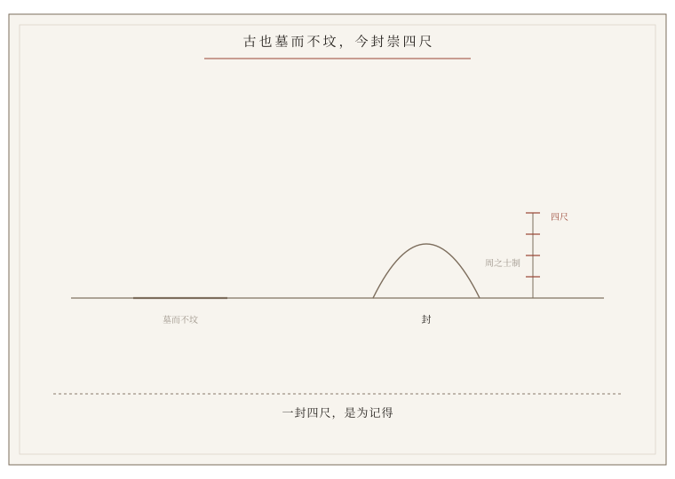

檀弓上 · 三·六 · 第 209 课
孔子既得合葬于防，曰「古也墓而不坟」，以「东西南北之人，不可以弗识」而封之，崇四尺。门人后至，曰「防墓崩」；孔子不应，三，乃泫然流涕曰「古不修墓」。注「言既得者，少孤不知其墓」「聚土曰封，封之周礼也」「高四尺，盖周之士制」。
说什么事：封了一座四尺的坟，又为它崩了而流泪。
落在哪一层：礼，兼及礼制尺度与礼意。论「识」与「不修」之两难。
为何编在此位：上节论丧拜之择，此节由拜转至葬。合葬、封坟、修墓三事相连，正是檀弓丧礼诸辨之始。
【经】孔子既得合葬於防，曰：「吾聞之，古也墓而不墳。今丘也，東西南北之人也，不可以弗識也。」於是封之，崇四尺。孔子先反，門人後。雨甚，至。孔子問焉，曰：「爾來何遲也？」曰：「防墓崩。」孔子不應。三。孔子泫然流涕曰：「吾聞之，古不脩墓。」
【注】言既得者，少孤不知其墓。墓謂兆域，今之封塋也；古謂殷時也。土之高者曰墳。東西南北，言居無常處也。聚土曰封，封之，周禮也，《周禮》曰「以爵等為丘封之度」；崇，高也，高四尺，蓋周之士制。先反，當脩虞事。後，待封也。以其非禮，故不應。脩，猶治也。
【疏】此一节论古者不修墓之事。天子之墓一丈，诸侯八尺，其次降差以两。「今丘也，东西南北之人也，不可以弗识也」：今既东西南北，不但在乡，若久乃归还，不知葬之处所，故云不可以不作封坟记识其处。注「周礼至士制」：引《周礼·冢人》云「高四尺，盖周之士制」者，其父梁纥虽为大夫，《周礼》公侯伯之大夫再命，与天子中士同，云「周之士制」谓天子之士也。「曰防墓崩」：防地之墓新始封，遇甚雨而崩；庾蔚云「防守其墓，备拟其崩」，若如庾之言，墓实不崩，郑何以言「修之而来」，孔子何以言「古不修墓」，违经背注，妄说异同，非也。「孔子泫然流涕」：自伤修墓违古，致令今崩，弟子重修，故流涕也。
墓 坟 注「墓谓兆域，今之封茔也」「土之高者曰坟」。墓是地界，坟是封土。
封 聚土为垄。
崇四尺 高四尺。注「盖周之士制」。
识 记识，使后人可寻。
先反 孔子先归，注「当修虞事」。
不应 三 不答；门人说了三次。
脩墓 治墓，重加修补。
孔子既得父母合葬于防，说：「我听说古时只有墓而不起坟。可我孔丘是东西南北之人，不能不作个记号。」于是封土，高四尺。孔子先回去行虞祭，门人后到。雨下得很大，门人到了。孔子问：「你们为何来得迟？」答：「防地的坟崩了。」孔子不答。门人说了三次。孔子泫然流涕说：「我听说，古人不修墓。」
此节三步：一封（起坟四尺）、一崩（大雨而崩）、一悔（泫然流涕，言古不修墓）。起坟本非古礼，孔子自知其为不得已，故先举「古也墓而不坟」一句，再举「东西南北之人」为理由——理由说得越明白，越见其不安。及坟崩，弟子修之而来，孔子不答者三，然后流涕：所痛不只是坟崩，是「修墓」这件违古之事又添了一层。
第一层 古也墓而不坟 郑注「古谓殷时也」。殷时墓而不坟，周时以爵等为丘封之度，始有封土。孔子起坟，明知其非古。礼之变，往往如此：不是不知古，是此时此地不能尽从古。
第二层 识与不识 「东西南北之人也，不可以弗识也」。疏解为「久乃归还，不知葬之处所」。这一句是全节最软处：起坟的理由不是尊礼，是怕日后找不到。人的有限——居无定所、记忆会淡——成了礼不得不变的理由。承认这一点，比强称古制更诚实。
第三层 四尺之度 注「高四尺，盖周之士制」。疏辨其父梁纥虽为大夫，而公侯伯之大夫再命与天子中士同，故用士制。一寸一分都不苟：既违古而起坟，仍守当世之度，不敢以私情逾制。这是孔子为礼的分寸所在。
第四层 古不修墓 坟崩而弟子修之，孔子曰「古不修墓」。郑注「脩，犹治也」。既封之后不复治，是古人之法；一旦治之，则封之事无穷。孔子所悔，不只是违古，是开了这个头：今日修一寸，明日修一尺，墓便成了活人的工程。
与今日何干 凡为不得已而变通之事，最要紧的是自己知道这是变通，并守住变通的边界。给亲人立碑、给旧物留档、给旧例开口子，都同此理：开口可以说清，开了口就别再层层加码。
| 左 | 右 |
|---|---|
| 既得合葬于防 | 少孤，不知其墓，今始得 |
| 古也墓而不坟 | 古谓殷时 |
| 东西南北之人 | 居无常处，久归不识其处 |
| 不可以弗识 | 起坟之由，在识不在尊 |
| 封之崇四尺 | 周之士制，不敢逾度 |
| 防墓崩 | 新封遇甚雨 |
| 古不修墓 | 既封不复治，治则无穷 |
画一片雨后的墓地，视点略低。画面中央一座新封的土坟，封土呈馒头状、色新而带湿，坟面上有一道自上而下的裂痕与一小块塌落（示「防墓崩」）。坟前立一块极矮的无字石。坟左右各有一双沾泥的履印自远处而来，止于坟前，示门人后至。天空低压，远处有雨幕与积水反光，地面湿而反光。全画不画人、不写文字。赭色只用在坟面那道裂痕与塌落的一小块土上。
